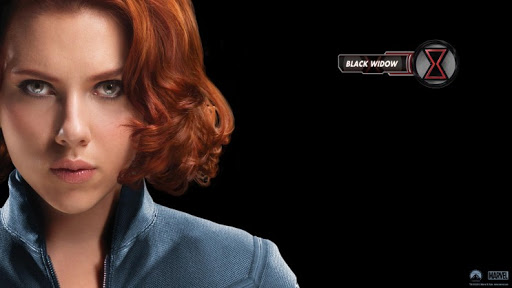

블랙위도우는 스파이 출신답게 잠입, 암살, 저격, 무기 관련 지식, 각종 전술전략 등에 능하며 신체개조를 받아 일반인을 훨씬 초월하는 강력한 신체능력과 격투능력을 지니고 있다.# 특기할 만한 무기로는 블랙 위도우 스팅(Black Widow Sting)이라는 팔찌가 있는데, 전기충격기, 와이어, 최면가스 등 다양한 기능을 갖추고 있다. 처음엔 검은 숏컷에, 나비모양 마스크, 전신 망사스타킹에 망토와 검은 레오타드를 입은 상당히 깨는 모습이었으나, 지금과 같은 적발, 전신 타이즈 코스튬이 처음 등장한 것은 어메이징 스파이더맨 #86에서부터였으며, 블랙 위도우 스팅 역시 여기서 처음 등장했다. 특징이라면 주역인 작품에선 상당히 고생한다. 아무리 유능한 스파이고 노화가 느리며 일반인을 초월한 신체능력을 갖고 있다지만 기본적인 스펙은 인간을 넘지 못하기 때문에 육탄전을 할때 패하거나[6] 피투성이가 된 이후에 겨우 이기는 경우도 흔하다. 이런 약점을 사격이나 온갖 계략으로 커버하는 편으로 영화에서도 나오는 "약한 척하면서 뒤통수치기"가 특기중 하나다. 일례로 한 목표 대상이 벙커속에 숨어서 비디오로 바깥을 지켜보는 상황에 자신의 죽음을 연출한 영상을 해킹해 틀은뒤 목표가 스스로 걸어나오게 만들었다.

소련 스탈린그라드 출신. 2차 세계대전 이전 그녀가 살았던 건물에 나치의 방화로 불이 났고, 그녀의 어머니가 어린 로마노바를 창밖으로 던졌을 때 소련의 군인이자 그녀의 양아버지가 되는 이반 페트로비치에 의해 구조되었다. 이후 알렉시 쇼스타코프라는 이름의 파일럿과 결혼을 하지만 KGB가 그를 '레드 가디언'이라는 소련판 캡틴 아메리카로 개조하였고 그녀에게는 그가 사고사했다고 알려주었기 때문에 로마노바는 그가 죽었다고 생각하게 된다. 이후 레드룸에 들어가 신체 개조와 교육을 받게 되고, 이때 블랙 위도우라는 코드네임을 받는다. 레드룸에서 그녀를 가르친 사람이 버키 반즈였다. 둘은 훈련과정에서 몰래 사랑에 빠졌으나, 들켜 헤어지게 되었다.[7] 그녀의 출생에 대해서는 정확히 밝혀진 바가 없으며, 다만 로마노프 왕조 혈통이라는 루머가 있다.